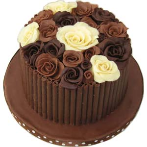

| Butter cakes | made from creamed butter, sugar, eggs, and four. |
| Sponge cakes | made from whipped eggs, sugar, and flour. |
| Chiffon cakes | sponge cakes with vegetable oil, which adds moistness. |
| Chocolate cakes | butter cakes, sponge cakes, or other cakes flavored with melted chocolate or cocoa powder. |
| Coffee cake | generally thought of as a cake to serve with coffee or tea at breakfast or at a coffee break. |
| layer cakes | include most of the traditional cakes used as birthday cakes, etc. |
| Yeast | the oldest and are very similar to yeast breads. |

Butter cakes
Butter cakes are made from creamed butter, sugar, eggs, and four. They rely on the combination of butter and sugar beaten for an extended time to incorporate air into the batter. A classic pound cake is made with a pound each of butter, sugar, eggs, and flour. Baking powder is in many butter cakes, such as Victoria sponge. The ingredients are sometimes mixed without creaming the butter, using recipes for simple and quick cakes.
Sponge cakes
Sponge cakes (or foam cakes) are made from whipped eggs, sugar, and flour. They rely primarily on trapped air in a protein matrix (generally of beaten eggs) to provide leavening, sometimes with a bit of baking powder or other chemical leaven added as insurance. Sponge cakes are thought to be the oldest cakes made without yeast. An angel food cake is a white sponge cake that uses only the whites of the eggs and is traditionally baked in a tube pan. The French Génoise is a sponge cake that includes clarified butter. Highly decorated sponge cakes with lavish toppings are sometimes called gateau; the French word for cake.
Chiffon cakes
Chiffon cakes are sponge cakes with vegetable oil, which adds moistness.
Chocolate cakes
Chocolate cakes are butter cakes, sponge cakes, or other cakes flavored with melted chocolate or cocoa powder. German chocolate cake is a variety of chocolate cake. Fudge cakes are chocolate cakes that contains fudge.
Coffee cake
Coffee cake is generally thought of as a cake to serve with coffee or tea at breakfast or at a coffee break. Some types use yeast as a leavening agent while others use baking soda and/or baking powder. These cakes often have a crumb topping called streusel and/or a light glaze drizzle.
layer cakes
Butter or oil layer cakes include most of the traditional cakes used as birthday cakes, etc., and those sold as packaged cakes. Baking powder or bicarbonate of soda are used to provide both lift and a moist texture. Many flavorings and ingredients may be added; examples include devil's food cake, carrot cake, and banana bread.
Yeast
Yeast cakes are the oldest and are very similar to yeast breads. Such cakes are often very traditional in form, and include such pastries as babka and stollen.
see more about cakes in wiki